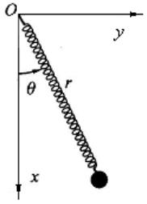

测试: 拉格朗日函数力学例题
测试文章
例题
已知质量为$m$的摆锤挂在轻弹簧上, 弹簧一端固定, 如图所示, 弹簧原长为$l_0$, 劲度系数为$k$. 求此弹簧摆的振动方程.

解析
取弹簧和摆锤为系统, 自由度$s=2$, 选择$r$,$\theta$为广义坐标. 以弹簧为转动参考系, 那么摆锤的速度$\vec{v}$可以表示为
其中$\vec{e}_r$是沿$r$向外的单位矢量, 而$\vec{k}$为垂直于纸面向外的一单位矢量. 这两个矢量是正交的, 从而摆锤的速度大小应满足
对于轻弹簧, 我们不考虑其质量, 则系统动能
对于重力势能, 取坐标原点$O$为重力势能零点, 同时, 系统的势能总共有两部分: 一是摆锤所具有的重力势能, 二是弹簧所具有的弹性势能, 因此综合起来, 系统的势能
作Lagrange函数
可知
代入到保守系拉格朗日方程中, 立得
消去整理, 得
这就是弹簧摆的振动方程.